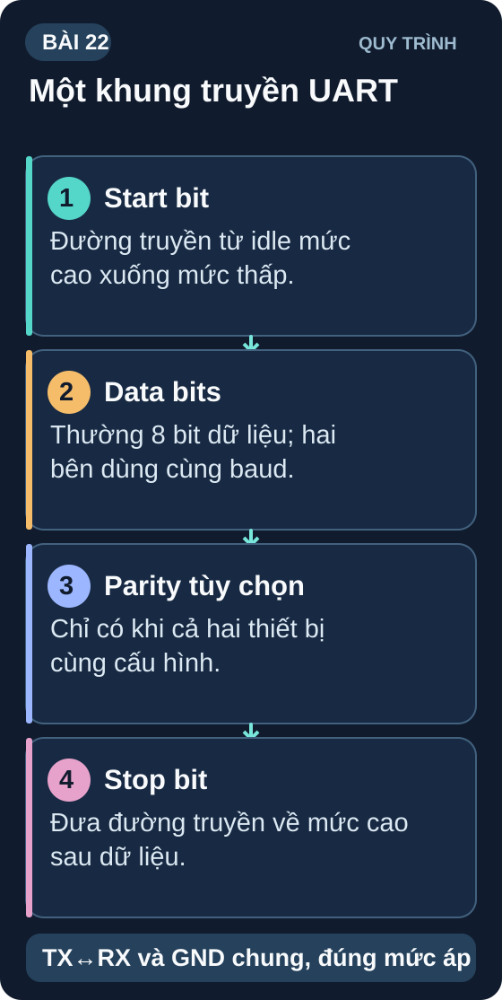
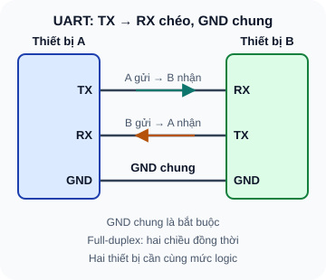
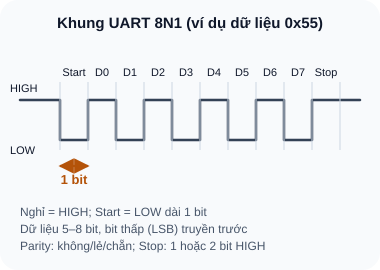
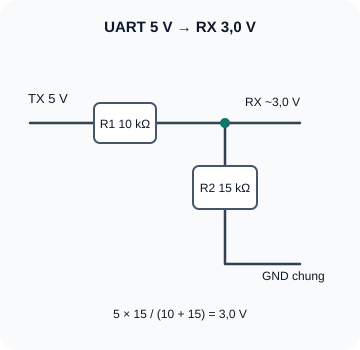

Giao Tiếp Số — UART Cơ Bản
Universal Asynchronous Receiver/Transmitter — giao thức nối tiếp đơn giản nhất, nền tảng của debug, GPS module, Bluetooth AT và nhiều module cảm biến.
- Hiểu UART là gì — giao tiếp nối tiếp, không đồng bộ, full-duplex
- Hiểu Baud Rate — bit/giây và cách chọn baud rate phù hợp
- Đọc được frame UART: Start bit, Data bits, Parity, Stop bit
- Kết nối TX → RX đúng (TX của thiết bị A nối RX thiết bị B)
- Hiểu vấn đề điện áp: UART 5V vs 3,3V — cần level shifter
- Thực hành: Serial Monitor, gửi/nhận dữ liệu qua Arduino IDE
- Kết nối module GPS (NEO-6M) hoặc Bluetooth HC-05 qua UART
- Debug UART bằng phần mềm (Putty, Serial Monitor)

Dụng cụ
| Tên | Thông số | SL |
|---|---|---|
| Arduino Uno/Nano hoặc ESP32 | Vi điều khiển có UART hardware | 1 |
| Module USB-UART (CP2102 hoặc CH340) | Để kết nối máy tính với mạch UART | 1 |
| Module Bluetooth HC-05 hoặc HC-06 | UART AT commands — tùy chọn | 1 |
| Điện trở 10kΩ, 15kΩ (sai số 5% hoặc tốt hơn) | Phân áp UART 5V→ESP32 RX; kiểm điện áp nguồn và ngưỡng GPIO thực tế | 3 mỗi loại |
| Breadboard + dây jumper | — | 1 bộ |
1. UART — Giao tiếp nối tiếp không đồng bộ
UART (Universal Asynchronous Receiver/Transmitter) truyền dữ liệu bit-by-bit trên một dây duy nhất, không cần clock chung (asynchronous) — hai bên tự đồng bộ nhờ Baud Rate giống nhau. Đây là giao thức đơn giản nhất trong các giao thức số.

Đọc mô tả D22-1
TX của thiết bị A nối RX của thiết bị B, RX của A nối TX của B, và hai GND nối chung. UART full-duplex nên hai chiều chạy đồng thời.
1.1 Baud Rate — Tốc độ truyền bit
Baud Rate = số bit truyền mỗi giây. Hai bên PHẢI cài cùng baud rate, nếu khác sẽ nhận được dữ liệu sai (garbage characters).
| Baud Rate | Thời gian 1 bit | Ứng dụng phổ biến |
|---|---|---|
| 9,600 bps | 104 µs | GPS module NEO-6M, cảm biến chậm |
| 115,200 bps | 8,7 µs | Arduino Serial Monitor, debug ESP32 |
| 921,600 bps | 1,1 µs | Boot loader ESP32, log tốc độ cao |
| 1,000,000 bps | 1 µs | LIDAR, Dynamixel servo |
1.2 Frame UART chuẩn

Đọc mô tả D22-2
Đường truyền nghỉ ở mức HIGH. Start bit LOW dài một bit. Tám bit dữ liệu, bit thấp nhất D0 truyền trước; ví dụ 0x55 là 1,0,1,0,1,0,1,0. Sau đó một stop bit HIGH rồi lại nghỉ HIGH.
1.3 Vấn đề điện áp — Level Shifting
Arduino Uno TX có thể lên gần 5V HIGH; ESP32 RX không được nhận trực tiếp mức đó. Với nguồn TX 4,75–5,25V và điện trở sai số 5%, có thể dùng phân áp một chiều TX → R1=10kΩ → RX; R2=15kΩ từ RX xuống GND: danh định 3,0V, trường hợp cao nhất khoảng 3,28V và thấp nhất khoảng 2,74V. Đối chiếu ngưỡng V_IH/V_Imax của đúng ESP32 và điều kiện nguồn thực tế trước khi lắp; nếu khác giả thiết, dùng IC chuyển mức được định mức phù hợp. Espressif: giới hạn điện áp GPIO.

Bản chữ của sơ đồ
TX 5 V qua R1 10 kΩ tới nút RX khoảng 3,0 V; R2 15 kΩ nối nút RX về GND. Vout không tải danh định = 5×15/(10+15) = 3,0 V. GND hai thiết bị chung. Chỉ dùng trên đường đẩy kéo một chiều từ TX 5 V tới RX 3,3 V; kiểm nguồn, sai số điện trở, input leakage và ngưỡng GPIO của board thực tế.
2. Thực hành Serial UART với Arduino IDE
// UART Echo Test — Arduino/ESP32
void setup() {
Serial.begin(115200); // Baud rate
Serial.println("UART ready. Nhap ky tu de echo...");
}
void loop() {
if (Serial.available() > 0) {
char c = Serial.read();
Serial.print("Nhan duoc: ");
Serial.println(c);
}
}
Upload code. Mở Serial Monitor (Ctrl+Shift+M). Chọn baud rate 115200.
Gõ bất kỳ ký tự và Enter → xem echo trả lại.
Thay baud rate Serial Monitor thành 9600 khi code vẫn 115200 → quan sát garbage characters.
// Đọc UART module GPS NEO-6M: RX module→TX Arduino, TX module→RX Arduino
#include <SoftwareSerial.h>
SoftwareSerial gpsSerial(4, 3); // RX=pin4, TX=pin3
void setup() {
Serial.begin(115200); // Debug
gpsSerial.begin(9600); // GPS baud rate
}
void loop() {
while (gpsSerial.available()) {
Serial.write(gpsSerial.read()); // Forward GPS data to PC
}
}
Ví dụ SoftwareSerial(4, 3) trên Arduino Uno 5 V: để chỉ đọc NMEA, nối TX của GPS 3,3 V tới D4 (RX) và nối GND chung; để chân RX của GPS chưa nối. Nếu cần gửi lệnh từ D3 (TX 5 V) sang RX của NEO-6M, phải qua mạch chuyển mức xuống điện áp được u-blox cho phép; đầu vào chip không chịu trực tiếp 5 V. Kiểm mã/revision của module để biết bộ ổn áp/chuyển mức sẵn có, và kiểm ngưỡng nhận mức cao ở phía Uno trước khi lắp.
1: Frame 8N1 = 1 Start + 8 Data + 1 Stop = 10 bit. Thời gian 1 byte = 10 bit × (1/9600) = 10 × 104,2µs = 1,042 ms.
2: Mismatch baud rate — code và Serial Monitor dùng baud rate khác nhau. Vào Arduino IDE → Tools → Serial Monitor → đổi baud rate ở góc dưới phải cho khớp với Serial.begin() trong code.
3: V_out = 1,8V từ V_in = 5V. Tỷ lệ: R2/(R1+R2) = 1,8/5 = 0,36. Chọn R2=10kΩ: R1 = R2 × (5–1,8)/1,8 = 10k × 1,78 = 17,8kΩ → chọn R1=18kΩ, R2=10kΩ. V_out = 5 × 10/(18+10) = 1,786V ≈ 1,8V ✓